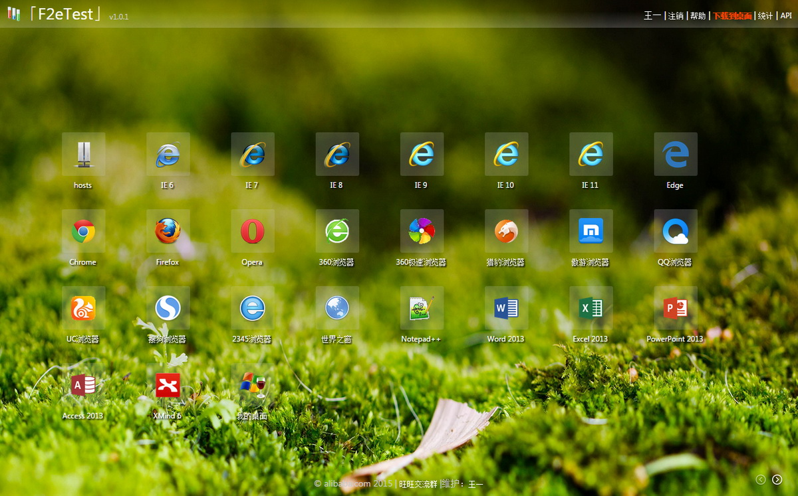
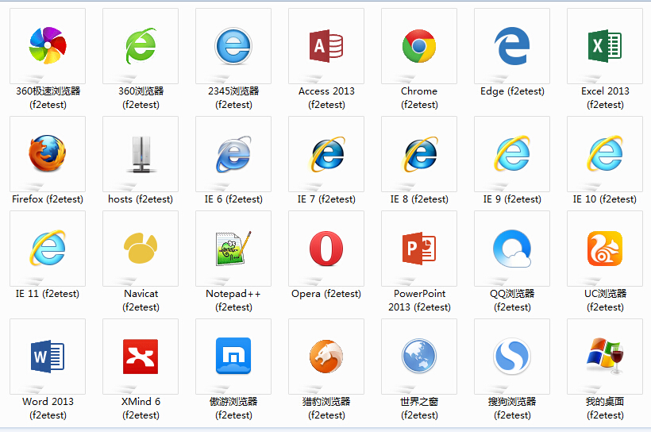
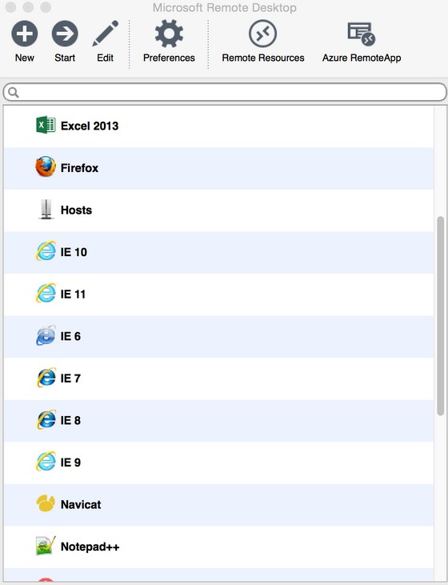

F2etest
F2etest是一个面向前端、测试、产品等岗位的多浏览器兼容性测试整体解决方案。
注：F2e test = Front to End Test = 前端测试
在之前，我们一般有三种解决方案：
- 本机安装大量的虚拟机，一个浏览器一个虚拟机，优点：真实，缺点：消耗硬盘资源，消耗CPU资源，打开慢，无法同时打开多个虚拟机
- 使用IeTester等模拟软件，优点：体积小，资源消耗小，缺点：不真实，很多特性不能代表真实浏览器
- 公用机器提供多种浏览器，优点：不需要本地安装，不消耗本机资源，缺点：资源利用率低，整体资源消耗非常恐怖
现在，有了F2etest，一台普通的4核CPU的服务器，我们就可以提供给20人以上同时使用。
在这之前我们需要20台机器，相比之下，至少10倍的硬件利用率提升。
再加上我们平时做多浏览器测试时，并不是满负荷工作。经常是测试一会，开发一会，或者是忙点别的事，因此理论并发能力至少可以再乘2，就是说一台4核服务器，理论上跑40人同时在线，非常轻松。
但是在此之前，如果我们是单人虚拟机模式的话，当你没在测试时，CPU、内存、硬盘，全部都是处在浪费状态。
相比之前的方案，我们有以下优势：
- 10倍以上硬件利用率，降低企业运营成本
- 非常棒的用户体验，极大的提高测试效率
- 真实浏览器环境，还原真实测试场景
在这个解决方案中，我们使用了以下技术：
- Guacamole: 开源的HTML5远程解决方案
- Windows Server: Server版Windows，最大化复用机器资源
- hostsShare: 跨浏览器，跨服务器的hosts共享
成功案例
如果您使用了我们的解决方案，请联系我们添加在此处。
产品截图

Chrome插件:

Windows:

Mac:

安全风险警示(非常重要)
由于本系统基于Windows Server体系搭建，因此系统的安全性完全取决于部署人的安全部署能力。
如果您希望部署本系统，请确保以下几点：
- 严禁将本系统部署在公网环境，仅可部署在内网环境中使用，作为内部测试用途
- 请将Windows Server服务端升级到最新版本及补丁，以保证没有出现安全漏洞
- 请将User用户之间做到完全隔离，仅提供User用户文件的访问权限，别的任何权限请勿多余授权
- 请将f2etest-client仅设置为管理员拥有权限，防止API接口被恶意访问
安装
-
安装nodejs
安装请访问官网：https://nodejs.org/，如果已安装好，请略过。
-
下载f2etest代码
git clone https://github.com/alibaba/f2etest.gitclone后，会发现以下几个目录：
-
f2etest-web: f2etest的WEB站点，用来提供f2etest服务，用户最终就是访问这个站点使用f2etest -
f2etest-guacamole: 这是我们定制过的开源版本，方便f2etest进行调用 -
f2etest-client: f2etest的执行机客户端站点，主要提供API给f2etest-web使用，用来同步用户账号 -
hostsShare-client: 安装在f2etest远程环境中的客户端，用来修改f2etest-web上的hosts绑定 -
f2etest-local: 用来在本机安装代理服务器，并将f2etest所有访问反向代理到本地，以共享本机的hosts绑定，本组件已发布至npm，无需安装，详细使用请至系统内查看帮助 -
f2etest-chrome: chrome浏览器下的客户端，无需打开f2etest网站，即可访问f2etest中的所有APP，本组件已发布至chrome官方市场，无需安装，详细使用请至系统内查看帮助
下面分别针对前4个组件，会有针对性的安装教程。
我们建议将1，2组件安装在同一台Linux服务器上，操作系统为CentOs。
-
-
安装f2etest-guacamole
f2etest-guacamole是定制版本的guacamole，安装方法请查看：Install Guacamole
-
安装mysql
安装mysql: https://www.mysql.com/，如果已安装好，请略过安装步骤。
新建库：f2etest
初始化表结构：f2etest-web/f2etest.sql
-
配置f2etest-web
初始化f2etest-web
cd f2etest-web npm install修改conf/site.json：
- port: 站点监听端口号
- name: 站点名称，修改为自己站点名称
- about: 站点介绍，显示在网页title后面，修改为自己的站点介绍
- icon: 站点icon，默认不需要修改
- dbHost: 数据库连接信息，修改为mysql服务器IP地址
- dbUser: 同上
- dbPass: 同上
- dbTable: 同上
- clientApiKey: f2etest远程桌面客户端的ApiKey，正确的ApiKey才能访问远程的API，用来创建当前用户的账号，请更改为随机值，并保持和f2etest-client中的值一致
- guacamoleApi: guacamole的API，请修改为上面第3步安装完成的API
- footer: 根据需要修改
- statNav: 如果需要自行扩展统计页面，根据需要修改
修改conf/server.json：
这里的id必需要与f2etest-guacamole中的名字保持一致
2003系统不支持remoteApp，2008以上Server系统支持
修改conf/app.json：
这里的server必需为server.json中已配置的id。program为可选参数，如果不填则直接连接桌面。
修改
lib/sso.js：由于f2etest系统要求必需是登录用户才能访问，因此必需要对接SSO系统才能工作。
请参考现有的
sso.js文件进行修改，对接到您公司内部SSO系统。启动f2etest-web服务：
node app.js启动成功后，可以发现WEB服务默认工作在：3000端口号
小建议：
- 为了方便用户使用，建议安装nginx等软件做反向代理，将80端口反向到3000端口，以将3000端口号隐藏起来。
- 建议使用pm2或forever等组件实现系统开机自动运行。
-
安装windows server机群
- 1号机：Server 2003: IE6
- 2号机：Server 2003: IE7
- 3号机：Server 2008: IE8
- 4号机：Server 2008: IE9
- 5号机：Server 2008: IE10
- 6号机：Server 2008: IE11
将来如果出现新的浏览器，可以即时增加新的服务器，用来部署新浏览器或软件。
如果在现有运行一段时间的系统中部署新服务器，请访问以下URL来同步所有账号：
http://f2etest.xxx.com/syncAllRemoteUsers由于Server 2008可安装的最低IE版本是8，因此IE6和IE7只能安装在Server 2003系统中。
安装软件及配置：
- 远程桌面会话主机：授权模式请选择按用户，会话请选择5分钟自动结束，空闲会话不允许超过6小时，颜色限制最大24位色
- 远程桌面授权：必需要进行正确激活并安装授权，安装时请选择企业授权，并按用户授权
- IIS：用来部署f2etest-client，由于我们的脚本使用asp编写，因此请安装asp相关支持组件
- 设置当前主机每天凌晨自动重启：防止开机久了，系统出现不稳定
- 用户组配置：请将Authenticated Users添加到Remote Desktop Users，允许普通用户可以登录远程
- 安装curl: 将curl的路径添加到系统变量的PATH路径中，以供APP快捷方式调用
- 配置Remote App：如果是2008操作系统，需要将被远程的程序添加到Remote App，否则无法远程，添加快捷方式时请选择：允许任何命令行参数
- 安装周边软件：输入法，Flash等
提示及注意事项：
- chrome由于和远程桌面有点小冲突，必需安装在2003操作系统中
- 使用频率比较低的浏览器，建议硬件配置可以适当降低
- 2008如果默认安装的是IE10浏览器，可以从安装补丁上卸载，从而降级到IE8，但是没办法降级到IE6或IE7
- 建议在任务计划程序中添加每周磁盘碎片整理，以保持最高工作性能
IE浏览器安全级别低解决方案：
- 以桌面模式连接一个User用户
- 按照需要自由配置IE
- 打开
regedit，导出HKEY_CURRENT_USER\Software\Microsoft\Windows\CurrentVersion\Internet Settings\为c:\ie.reg - 切换为
administrator用户 - 用文本软件打开
c:\ie.reg，替换HKEY_CURRENT_USER为HKEY_Users\Default - 打开
regedit，注册表编辑器中选择节点：HKEY_USERS，文件菜单->加载配置单元，选择C:\Users\Default\NTUser.dat，项名称输入：Default - 双击
c:\ie.reg导入注册表 - 在注册表编辑器中选择刚才加载的配置单元：
Default，文件菜单->卸载配置单元，并确认上载
如何在每台服务器全局添加可信的根证书：
- 命令行打开
mmc - 菜单->
添加/删除管理单元, 并选择：证书 - 下一步选择：
计算机帐户，再点击下一步 - 在
受信任的根证书颁发机构的证书栏目中添加CA即可
-
部署f2etest-client
每台Server服务器上都需要部署f2etest-client，实现以下两个功能：
- 提供API给f2etest-web调用，用来初始化用户账号
- 远程桌面连接时，需要打开指定的浏览器或软件，并统计相应软件的使用次数
请根据需要选择合适的bat模板，模板中需要修改3处地方：
-
f2etestDomain: 修改为内部部署的f2etest域名 -
appid: 修改为f2etest-web中配置的相同应用id -
打开应用： 替换为应用的程序路径
由于需要在当前系统中添加新用户，f2etest-web站点必需设置为administrator权限，否则无法工作
修改setuser.asp中的apiKey，保持和f2etest-web中一致。
2008中必需要安装Remote App，并且要在Remote App的设置中：允许任何命令行参数。
重要安全说明：f2etest-client的www目录必需要设置为仅管理员有权限，否则任何人都可以查看到setuser.asp中的apiKey，会有严重的安全风险
-
安装hostsShare-client
hostsShare-client基于node-webkit开发，默认已经提供了一个编译版本在build目录中，可以直接部署使用。
本应用使用频率较高，建议选择CPU比较空闲的机器上部署。
hostsShare-client的bat可直接复制f2etest-client/app/中的：
禁用代理.bat
使用
-
WEB方式
我们基于guacamole实现WEB方式的使用，没有任何学习成本。
详细教程请参考f2etest-web中的帮助信息
-
桌面方式
桌面方式基于TSWF Schema协议实现的分发，目前Windows和MAC下都有完美的协议实现软件。
Win7天然就支持远程TSWF分发技术，Mac下仅需安装Microsoft Remote Desktop，也可完美支持TSWF，注意此软件需要使用英文市场下的id才能安装。
无论是Win7还是Mac，目前都已经完美支持Remote APP技术，实现远程应用本地化的完美体验。
相比较之下，由于桌面方式属于直连，性能上会更加理想，因此我们建议用户使用桌面方式。
感谢
- Guacamole: http://guac-dev.org/
- Nodejs: http://nodejs.org/